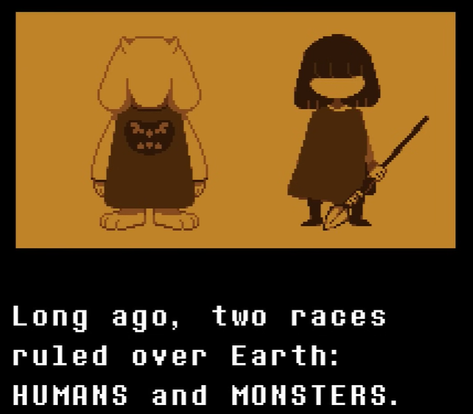
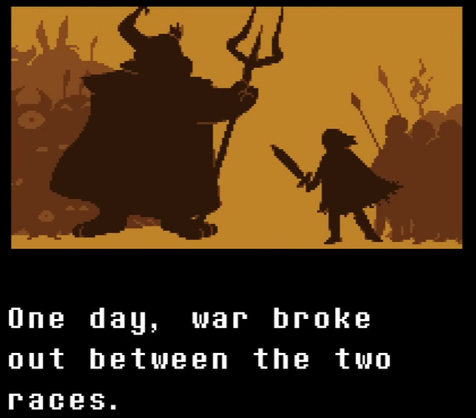
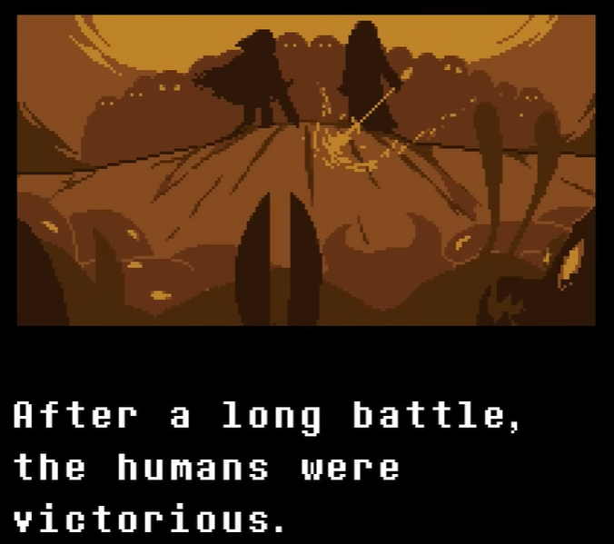
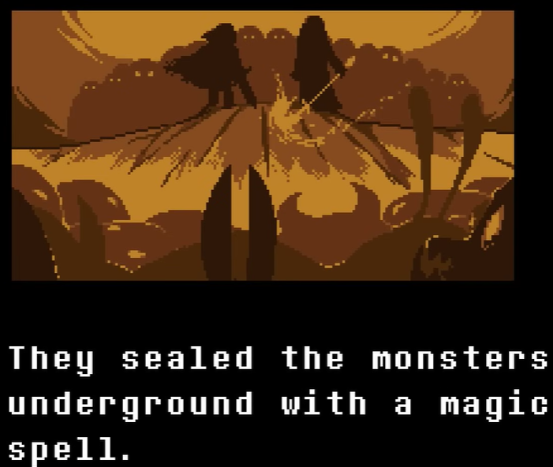
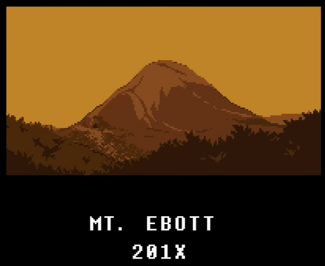
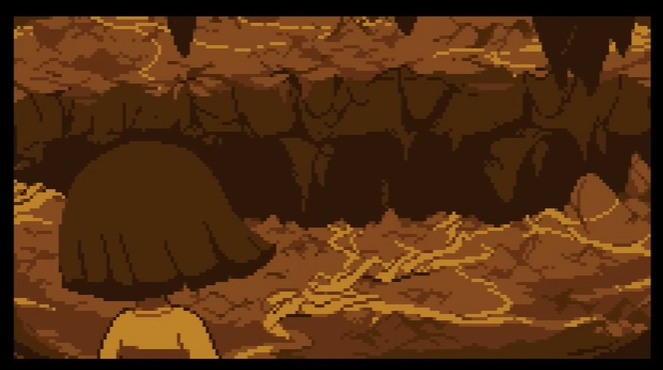
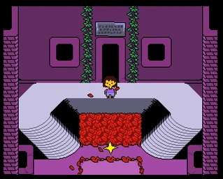
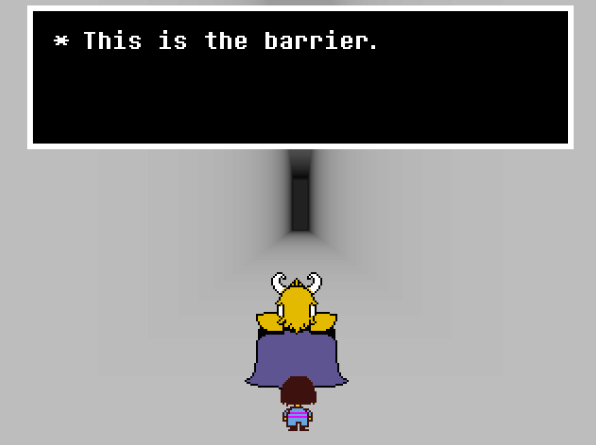

Início
Quiz
Login
Cadastro
História
Fases
Rotas
Almas e Humanos
Amigos
Chefes
O que é Undertale
Undertale é um RPG independente criado em 2015 por Toby Fox, conhecido por sua narrativa inovadora e trilha sonora marcante. Ambientado no Subterrâneo, um mundo habitado por monstros banidos da superfície, o jogo acompanha uma criança que precisa encontrar um caminho de volta para casa. O diferencial de Undertale está na liberdade de escolha: cada encontro pode ser resolvido com combate ou misericórdia, influenciando profundamente a história. Com personagens carismáticos, humor, emoção e três rotas principais — Neutra, Pacifista e Genocida — o jogo se destaca por desafiar expectativas e oferecer experiências totalmente diferentes a cada decisão. Celebrado mundialmente, Undertale conquistou milhões de jogadores e se tornou um marco da cultura pop pela forma única como combina narrativa, música e escolhas morais.
História

Há muito tempo, dois povos reinavem sobre a Terra: Humanos e Monstros.

Um dia, uma guerra se iniciou entre ambos.
 
Depois de uma longa batalha, os humanos foram vitoriosos.
Eles selaram os monstros no subsolo com um feitiço mágico.
Muitos anos depois . . .

MONTE EBOTT
201X
Reza a lenda que aqueles que escalam a montanha jamais retornam.

Fases

As Ruínas são a primeira área de Undertale e o local onde a criança humana cai após entrar no Subterrâneo. Essa região funciona como um tutorial do jogo, apresentando as mecânicas básicas de batalha, puzzles e escolhas morais. Logo no início, o jogador encontra Flowey, que tenta enganar a criança explicando falsamente o sistema de LV e EXP, e em seguida é salvo por Toriel, uma criatura maternal que guia o jogador pelos primeiros passos. Toriel ensina como resolver puzzles simples e mostra que é possível evitar combates usando misericórdia. Nas Ruínas, o jogador encontra inimigos fracos e não hostis, como Froggit, Whimsun e Loox, que reforçam o aprendizado sobre poupar inimigos. A área também introduz temas importantes da história, como a solidão, o medo dos monstros e a gentileza de Toriel. O ponto final da fase é o encontro com Toriel, onde o jogador deve decidir entre lutar ou poupá-la — decisão que influencia diretamente o tom da aventura. Ao sair das Ruínas, a criança segue para a área seguinte, Snowdin.
Snowdin é a segunda grande área de Undertale, marcada por um clima gelado e uma atmosfera leve e humorística. Após deixar As Ruínas, a criança entra nessa região nevada, onde encontra novos puzzles, inimigos e personagens importantes para a história. É em Snowdin que o jogador conhece os carismáticos irmãos esqueletos Sans e Papyrus, que se tornam figuras centrais do jogo. Papyrus tenta capturar o humano para provar seu valor à Guarda Real, enquanto Sans adota uma abordagem descontraída e brincalhona, oferecendo alívio cômico ao longo da jornada. A área apresenta inimigos mais variados, como Doggo, Chilldrake e Lesser Dog, e introduz batalhas com mecânicas mais criativas envolvendo humor e interação. Os puzzles, embora simples, reforçam a personalidade excêntrica e divertida de Papyrus. O ponto culminante de Snowdin é o combate contra Papyrus, que pode ser resolvido com luta ou misericórdia, influenciando seu futuro na história. Após o confronto, o jogador chega à aldeia de Snowdin, um local acolhedor com lojas, pousada e personagens amigáveis. Ao final, o caminho leva ao Bosque da Garganta d’Água (Waterfall), a próxima área da aventura.
Waterfall é a terceira grande área de Undertale, marcada por um ambiente melancólico, azul e misterioso, com rios, cachoeiras e ruínas antigas. Essa região aprofunda o tom emocional do jogo e revela detalhes importantes sobre o passado dos monstros e da guerra contra os humanos. A principal figura de Waterfall é Undyne, a líder da Guarda Real, que persegue o humano em diversas seções, criando momentos de tensão e batalhas de esquiva. Cada encontro aproxima o jogador do confronto direto com ela, que pode ser resolvido por combate ou misericórdia — decisão que ecoa no restante da história. Waterfall também apresenta novos personagens e situações marcantes, como os monstros tímidos da Enciclopédia dos Monstros, o comediante OnionSan, a dupla Mad Dummy e Napstablook, além de áreas opcionais como a Casa do Blook, o Temmie Village e a sala misteriosa do Boneco de Madeira. A fase traz puzzles mais elaborados, mecânicas novas (como mover blocos de gelo e usar correntes de vento) e temas musicais icônicos como “Quiet Water” e “Battle Against a True Hero” (dependendo da rota). A conclusão de Waterfall leva o jogador ao confronto decisivo com Undyne e, depois disso, à entrada de Hotland, a próxima área do jogo.
Hotland é a quarta grande área de Undertale, caracterizada por um ambiente quente, tecnológico e cheio de máquinas. É aqui que o jogo adota um tom mais acelerado e cômico, com foco em desafios, puzzles e participações inesperadas. Logo ao entrar, o jogador conhece melhor Alphys, a tímida cientista real responsável por vigiar o protagonista através de câmeras. Hotland também marca o início do papel mais ativo de Mettaton, o robô apresentador, que transforma a jornada em um verdadeiro espetáculo com quizzes, jogos de ação e programas de TV bizarros. A área inclui inimigos baseados em tecnologia e calor, além de mecanismos como plataformas móveis, lasers e puzzles com interruptores de luz. Ao mesmo tempo, Hotland aprofunda a história de Alphys, revelando temas como insegurança, responsabilidade científica e o projeto secreto envolvendo “determinación”. O ponto alto de Hotland é a preparação para o confronto com Mettaton, culminando na icônica batalha contra Mettaton EX (na rota pacifista). Após superar esses desafios, o jogador finalmente alcança o Núcleo (The Core), onde se encontram os sistemas de energia do Subterrâneo. A saída de Hotland leva diretamente para o desfecho da história, em New Home e no castelo de Asgore.

A Barreira é a última área de Undertale e marca o ponto decisivo da história. Localizada dentro do castelo do Rei Asgore Dreemurr, ela separa o Subterrâneo da superfície e mantém os monstros presos há séculos. Segundo a tradição, apenas sete almas humanas são capazes de romper essa barreira — Asgore já possui seis. Ao chegar nesse local, o jogador atravessa um ambiente silencioso e solene, com forte tom emocional e reflexivo. A área simboliza o fim da jornada e reúne temas centrais do jogo: perda, esperança, responsabilidade e as consequências das escolhas do jogador. O ponto culminante é o confronto com Asgore, um momento inevitável nas rotas Neutra e Pacifista. Nessa batalha, o jogo remove a opção de Misericórdia no início, destacando o desespero e o peso histórico do conflito entre humanos e monstros. Após o confronto, Flowey intervém, influenciando o rumo final de acordo com a rota seguida. Na rota Pacifista verdadeira, a Barreira é finalmente destruída — não pela força, mas por compaixão e união entre as almas, libertando o Subterrâneo. Já em outras rotas, o destino da Barreira muda conforme as ações do jogador. Assim, A Barreira representa não apenas o fim da aventura, mas o momento em que todas as escolhas feitas ao longo do caminho ganham significado.